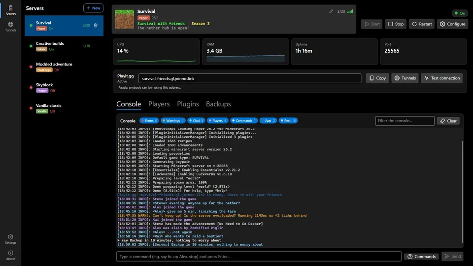
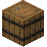
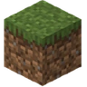

Create servers in 2 minutes
Pick a version, accept the EULA and you're done: it downloads the official JAR and generates the world for you. Vanilla, Paper, Purpur, Forge, NeoForge and Fabric.
Create, configure and manage Minecraft servers on Windows, Linux and macOS without touching the console. Modrinth mods, automatic backups and Internet access in a couple of clicks.

What are normally config files, commands and loose folders are buttons here.
Pick a version, accept the EULA and you're done: it downloads the official JAR and generates the world for you. Vanilla, Paper, Purpur, Forge, NeoForge and Fabric.
Search and install mods without leaving the app, filtered by your version and server type. Every download is verified.
Saves your world before every start, on stop and every hour while people are playing, without interrupting the game. Keeping as many copies as you want, with one-click restore.
Built-in Playit.gg tunnel: share an address and they join from anywhere. No router port forwarding.
The memory the server really holds and its live TPS, a console search, and each player’s profile: when they joined, what they said and what they mined. OPs, bans and whitelist with buttons instead of commands.
If the server dies it restarts by itself and tells you why, reading the crash report. With desktop notifications.
The app decides how much RAM each server may use and Java gives back what it does not need: an empty server goes from 3.5-4.7 GB to about 1 GB. It learns from how you use it and, if the PC runs short of memory, tightens sooner.
A card shows the server’s TPS and a band appears only when something is wrong for a while. “See solutions” offers one-click fixes: lower the distances, more memory, or mods that speed it up.
It stops the server when nobody is left and starts it when a friend tries to join, without wasting RAM or CPU.
From zero to playing in three steps, without typing a single command.

1A normal installer for Windows, an AppImage for Linux or a DMG for macOS. No Java needed up front: the app finds it or downloads it.

2Name it, pick the Minecraft version and the type. The app downloads the official files, verifies their checksum and generates the world.
Share the address with your friends and manage everything from the window: console, mods, players and backups.
10 and 11 · 64-bit
Get the .exeAppImage · x86_64
Get the AppImageApple Silicon and Intel
Get the .dmgStraight answers to what people search for most when setting up a Minecraft server.
Where to get Mojang's official server.jar, how to run it by hand, and an easier way with no commands.
Fabric, Forge or NeoForge, Modrinth mods with their dependencies, and a pack for your friends.
A built-in Playit.gg tunnel gives you a public address to share, with no fees and no router setup.
Automatic shutdown when idle and start-up when someone tries to join, without wasting resources.
What to look for and how it compares with Crafty Controller, Pterodactyl, AMP and MCSManager.
Install MC-ServerLauncher, click “+ New”, choose “Create a new one”, then the version and type (Vanilla, Paper, Purpur, Forge, NeoForge or Fabric), accept the Minecraft EULA, and the app downloads the official files and generates the world for you.
By hosting it yourself on your own computer. MC-ServerLauncher downloads the official server, configures it and keeps it running, and the built-in tunnel gives it a public address so your friends can join without a monthly fee or router port forwarding.
On your PC you pay nothing, there are no player or mod limits imposed by a plan, and the world is yours: the files are on your disk. In exchange, it is only available while your computer is on. A paid one is always online, but it costs a fee and usually caps RAM and mods.
Yes. It is free and open source: you can review the code on GitHub. Every download (Minecraft, Java, mods and the app's own updates) is checked against its official checksum before running. The app's own updates are also signed with a key that isn't on GitHub.
No. The app includes a Playit.gg tunnel: it gives you a public address you can share, without touching your router settings.
Yes. There is an AppImage for Linux and a DMG for macOS (Apple Silicon and Intel), plus the Windows installer.
Yes, from the built-in Modrinth browser, which automatically filters by your Minecraft version and your server type.
It restarts by itself (up to three attempts) and shows you why, reading Minecraft's crash report, and notifies you as well.
Download MC-ServerLauncher and set up your server today.
Download MC-ServerLauncher